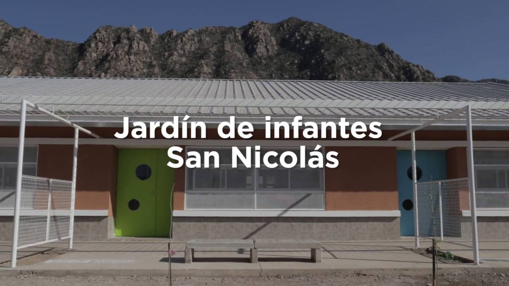

Estos son los Proyectos que hemos realizado hasta ahora:
Completado al 100% El primer proyecto de nuestra organización siquiera antes de que sea una ONG, comenzó como la lectura de una noticia de una protesta en la provincia de Jujuy por el cierre y abandono de la Escuela Pública Número 16 de Jujuy debido a pésimas condiciones, con solo 3 personas viajamos y nos ofrecimos a remodelar la escuela, con plata de nuestro propio bolsillo logramos restaurar las aulas a un estado al menos aceptable

Completado al 100%. Joaquín Ordoñez era un chico de Fuerte Apache que había quedado internado en un hospital después de un problema de adicciones, esto salió en las noticias, y cuando entrevistaron a los padres y hablaron del fracaso universitario de su hijo, decidimos emprender un proyecto con nuestra recién creada organización, conseguimos ayuda psicológica para el chico, y también hablamos con los directivos de UADE, proponiendo un acuerdo para la otorgación de Becas, despues de ayudar al chico a superar sus problemas, pudo realizar el curso de ingreso a la universidad, y era brillante, un pibe muy inteligente, que su vida casi se arruina por las adicciones, y hoy, está graduado de Ingeniero en Sistemas de UADE

"No creí que todavía había gente que creía en mi, me encantó el trato que me dieron los pibes de Wingman, me consiguieron una terapia muy útil, y me dejaron sacar adelante a mi propia familia"
Y no solo eso, el éxito de nuestro caso llamó la atención de otras universidades con las que pudimos hacer convenio.
"No creí que todavía había gente que creía en mi, me encantó el trato que me dieron los pibes de Wingman, me consiguieron una terapia muy útil, y me dejaron sacar adelante a mi propia familia"
Y no solo eso, el éxito de nuestro caso llamó la atención de otras universidades con las que pudimos hacer convenio.
Completado al 50% Nuestro proyecto mas dificil es uno árduo pero de mucha mayor calidad, con nuestra organización ya teniendo 10 miembros oficiales y mas de 300 donantes, fuimos contactados por los vecinos de Iruya, Salta, los cuales escucharon de nosotros y nos ofrecieron la oportunidad de hacer un Jardín de Infantes en su pueblo, Contactamos con posibles directivos y nos pusimos manos a la obra, las nuevas generaciones del pueblo se merecen una educación, y nada mejor que empezar desde los mas pequeños.
.jpeg)
